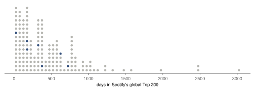
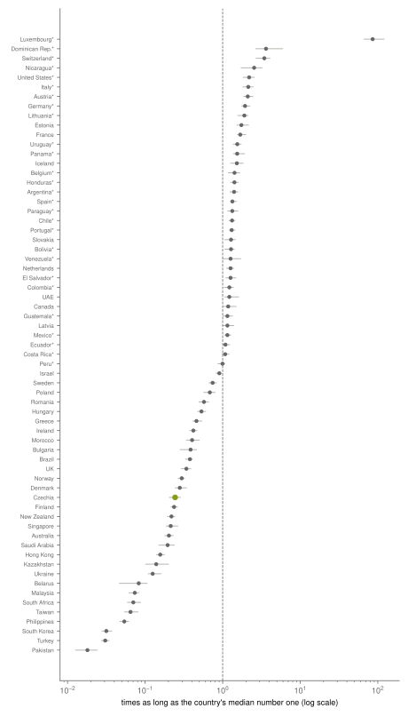
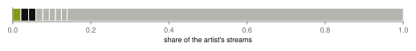
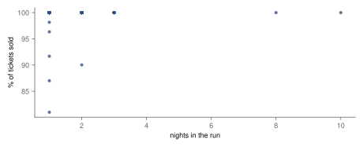
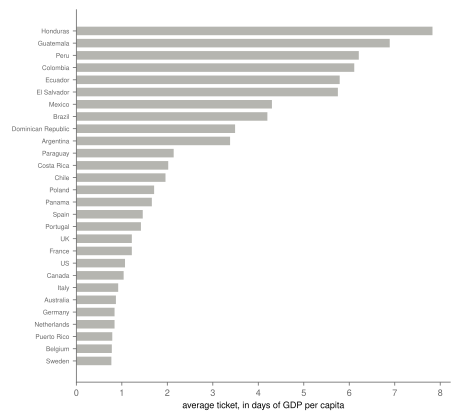

Research · Pop, measured, part 4 · Bad Bunny, 2017–2026
Bad Bunny, measured: a long-running hit, and tickets in days of income
Descriptive and pre-specified: DtMF has outlasted 72 % of global number ones; his tickets cost fewer dollars in Latin America than in the United States, but more days of GDP per head.
- global number ones that lasted longer than DtMF
- 28.1 % 95 % CI 21.1 % to 35.6 % · still charting, so its own days are a lower bound
- songs that make up half his Spotify streams
- 46 administrative count · of 271 · not a registered measure
- DtMF in Czechia, against the Czech median number one
- 0.2× 95 % CI 0.2–0.3 · 49th of 65
- average ticket in Honduras
- 7.8 days of GDP per capita · $64 · one show · administrative count
Overwhelmed? Here's the short version
- His 2025 album's title song has spent 634 days in the global Top 200, and as many in 15 of the 18 Spanish-speaking national charts; Argentina and Uruguay count 633 and Chile 631.
- Counted by track entries, only Taylor Swift has more global number ones among the series' five artists (14 against his seven); counted by distinct songs, his six equal Billie Eilish's. Half his listening comes from 46 songs.
- Against local hits the picture splits: it outlasted them in the United States, Switzerland, Italy and much of central and western Europe, and fell short in Czechia, the United Kingdom, Sweden, Norway, Denmark and Finland, and most of Asia.
- 96 % of his Boxscore entries sold out. In Honduras (one show), Guatemala, Peru and Colombia a ticket cost six to eight days of GDP per capita; in Puerto Rico, two entries (2019 and 2024) averaged less than one day.
- His 2025 residency in San Juan has no ticket figures in the source and is not in the tour results. Two tours were first collected from the wrong Wikipedia pages; that was corrected on 3 October 2026 and the tour results now cover five tours.
- All of it is descriptive, from kworb's Spotify chart totals (not YouTube or other services), Boxscore figures as Wikipedia lists them, and GDP per capita, which is not what fans earn. DtMF is still charting, so its place can still change.
Photo: Julian Lozano · CC0, toned
This is the fourth part of Pop, measured, which asks five questions of five artists: how long the artist's biggest song lasted against every global number one, where it lasted longest, whether the listening is one song or many, whether longer runs in one venue sold less of their tickets, and what a ticket cost in days of local income. The questions draw on work on the life of chart songs1, on the shift of musicians' income to live shows2, on concert pricing3 and on streaming's effect on music sales4. Bad Bunny is the series' artist who sings in Spanish. That makes two questions sharper than for the others: whether a hit in Spanish lasts as long outside the Spanish-speaking world as inside it, and what his tickets cost in Latin American countries, where incomes are lower than in the United States or Europe.
Data
The data are the series' common collection, made once on 1 October 2026: for the global chart and 75 national Spotify charts, every song that has entered the Top 200 with its days, peak and total streams, and the artist's page with every song's streams5. By the series rule, the focal song is his song with the most global streams that has a full record, DtMF, the title song of his 2025 album Debí Tirar Más Fotos; it peaked at number one. The reference set is the 164 global number ones since 2017 whose start can be seen. Counts marked "administrative count" are taken in full from a published total rather than from a sample, so they carry no sampling interval.
For the tours, the Wikipedia articles on the X 100pre Tour (2019), El Último Tour del Mundo 2022, the World's Hottest Tour (2022), the Most Wanted Tour (2024) and the Debí Tirar Más Fotos World Tour (2025–2026) list Billboard's Boxscore figures (the attendance and gross that promoters report to Billboard)6: 143 entries covering 222 shows. His 2025 residency in San Juan, No Me Quiero Ir de Aquí, lists 31 shows but no tickets or gross, and by the series rule nothing is taken from other sources, so it is not in the tour results. Two of these, El Último Tour del Mundo 2022 and the Most Wanted Tour, were first collected from the wrong pages (his 2020 album and a 2011 tour by another artist); the audit of 3 October 2026 found it, the right articles were collected the same day, and every tour result below includes them. Income is the World Bank's GDP per capita in current dollars for the country and year7, or the latest earlier year where that year is not yet published, which applies to the 18 entries of 2026; Puerto Rico has its own series there.
How this was done
The methods are those of the series, committed on 1 October 2026 (see the registration row above). How long a song lasted is its total days in the global Top 200; songs still in the chart are treated as unfinished by the Kaplan–Meier estimator8, which counts such a song as lasting at least as long as it has so far, and a song's place is the share of number ones estimated to last longer, with a 95 % confidence interval (CI) from 2 000 bootstrap resamples, that is, the estimate recomputed on 2 000 random redraws of the songs. For countries, the focal song's days in each national chart are divided by the median days of that country's own number ones; where the song is still in the chart the ratio is a lower bound. Runs are compared with the share of tickets sold by Spearman's correlation, which compares ranks and runs from −1 to 1, under the rule set in advance that if nine entries in ten sold out, the data show demand at or above capacity and nothing more. Ticket prices are gross divided by tickets sold, then divided by a day of the host country's GDP per capita. All results are descriptive.
How long DtMF lasted
By 1 October 2026, DtMF had spent 634 days in the global Top 200 and was still in the chart. 28.1 % of number ones since 2017 are estimated to last longer than it has so far (95 % CI 21.1 % to 35.6 %), and because it has not left, its own days can only grow; the share can still move as other songs still in the chart finish their runs. The median number one lasted 373 days. Counted by track entries in the reference set, only Taylor Swift has more global number ones among the series' five artists: 14 under her name, against his seven. His other number ones are DÁKITI, 713 days (27 % of number ones lasted longer); Moscow Mule, 321 days (58 % of number ones lasted longer); MIA, 362 days (52 % of number ones lasted longer); WHERE SHE GOES, 183 days (73 % of number ones lasted longer); MONACO, 171 days (74 % of number ones lasted longer); Dakiti, 28 days (94 % of number ones lasted longer). Dakiti and DÁKITI appear to be the same 2020 song under two track entries, one short-lived and one that kept charting, so he has six distinct number ones under his name, as many as Billie Eilish. Both entries stay in the reference set, as the registered rule lists them; without the short one, the share for DtMF would be 28.3 % (n = 163). He is also credited on Grupo Frontera's un x100to (2023), a global number one of 322 days. It is in the reference set, as Grupo Frontera's song, but the series rule (lead or credited artist) should also have placed it among his own number ones; the code missed that because kworb's global list credits only Grupo Frontera. On the same curve, 57 % of number ones lasted longer than it. Two of his number ones, MIA and Moscow Mule, lasted close to the median; WHERE SHE GOES, MONACO and the short Dakiti entry left well before it; DÁKITI lasted longer than DtMF has so far.
The curve behind these numbers is steep at first and long at the end: half of all number ones had left the global chart by 373 days, 26 % were still in after two years and 14 % after a thousand days. DtMF is already well into the long end, and it will go on moving along it while it stays in the chart.

Where it lasted
DtMF entered 65 national charts. In most of Latin America and in Spain it has stayed in the Top 200 every day since it came out: 634 days in Colombia, 634 in Mexico, 634 in Spain, the most a song released in January 2025 could have by October 2026. Because it is still in those charts, its ratio to the local median number one is a lower bound there, and it is held down by how long Latin American number ones last anyway, 551 days in Mexico and 520 in Colombia. By the registered ratio, after Luxembourg it stood out most against local hits in the Dominican Republic (3.6×), Switzerland (3.4×), Nicaragua (2.5×), the United States (2.2×) and Italy (2.1×). Luxembourg tops the registered ranking at 86× for the reason given in part 1: hundreds of songs there have been number one for a single day, so its median number one lasted 7 days.
It lasted longer than the local median number one in 34 of the 65 countries. Where it did not, the gap is wide. In the United Kingdom it spent 141 days in the chart, 0.3× the local median; in Brazil 0.4×; in Czechia 105 days against a median number one of 431, 0.2 times as long (95 % CI 0.2–0.3), 49th of 65. Slovakia, at 1.3×, and Poland, at 0.7×, kept it longer than Czechia did. It did least well in South Korea, Turkey and Pakistan, where it barely entered. Ranked by days alone, a ranking added after the results were seen (post hoc), the first fifteen places all go to Spanish-speaking charts where it has been in the Top 200 every day; Czechia is 49th. On the registered ratio, which divides by how long local number ones last, those charts sit mid-table (Spain 18th, Mexico 32nd), below Switzerland, Austria, Germany, Lithuania and Estonia. So the reading by language rests on days alone: the song stayed every day in the Spanish-speaking charts, but it also outlasted local hits across much of central and western Europe, and passed quickly through the United Kingdom, Sweden, Norway, Denmark, Finland and most of Asia (Iceland, at 1.5×, is the Nordic exception). The data describe where it lasted, not why.

DtMF stood out most against local hits in the Dominican Republic, Switzerland and Nicaragua; in Czechia it lasted about a quarter as long as the median number one.

One song or a catalogue
Kworb lists 271 songs on his Spotify page. The biggest, LA CANCIÓN, holds only 2 % of his streams; DÁKITI and Tití Me Preguntó follow, and the top three together hold 6 %. Half of all his streams come from 46 songs, and 20 songs each hold one percent or more; these two counts are descriptive additions, not registered measures. For Harry Styles in part 1, six songs made up half; for BTS in part 3, 41. The Gini coefficient over songs, which runs from 0 when every song has the same streams to 1 when one song has them all, is 0.54 (Harry Styles 0.56, BTS and Taylor Swift 0.64, Billie Eilish 0.52). Bad Bunny's listening is spread over a large catalogue rather than concentrated on a few songs. Some of those songs are other artists' with him featured, which the page counts as his. The data do not mark which songs are features, so how much they change the spread was not checked.
Spread over a large catalogue: LA CANCIÓN, his biggest song, is 2 % of his streams.

How many nights a city can fill
His five tours with figures, Debí Tirar Más Fotos World Tour, El Último Tour del Mundo 2022, Most Wanted Tour (Bad Bunny), World's Hottest Tour and X 100pre Tour, played 222 shows in 143 Boxscore entries. The longest run was 10 nights at the Riyadh Air Metropolitano Stadium in Madrid in 2026, ten sold-out nights in one stadium. 96 % of entries sold 99.5 % of their tickets or more, which crosses the threshold set in advance: demand was at or above capacity nearly everywhere, and the data cannot say how far above. The correlation between nights and the share sold is 0.10 (95 % CI −0.05 to 0.19), reported and not read further. The lowest share, 81 %, was in Bridgeport on the X 100pre Tour of 2019. The median entry grossed 3.55 million dollars a night. The 31 nights in San Juan have no figures, so the question stops at ten nights.
96 % of entries sold out, ten nights in one Madrid stadium among them; the lowest, Bridgeport in 2019, sold 81 %.

What a ticket cost, in days of income
Across 28 countries, the average ticket cost 7.8 days of the local GDP per capita in Honduras (64 dollars) and 6.9 in Guatemala; Peru, Colombia, Ecuador and El Salvador were each near six days, Mexico 4.3 and Brazil 4.2. The 12 countries above two days of income were all in Latin America. Honduras rests on a single show. At home in Puerto Rico the average ticket was 75 dollars, 0.8 of a day of Puerto Rican income, but this rests on two entries, from 2019 and 2024, while the dearest days come mostly from the 2022 and 2026 tours, so the comparison mixes tours; in the United States 230 dollars, 1.1 day. The cheapest ticket in dollars was in Paraguay, 36 dollars, and the dearest 230: a ratio of 6.3, against about 10-fold in days of income.
By tour, a descriptive addition that is not a registered measure, gross divided by tickets sold gives 85 dollars a ticket on the X 100pre Tour (2019), 203 on El Último Tour del Mundo 2022, 168 on the World's Hottest Tour (2022), 285 on the Most Wanted Tour (2024) and 152 on the Debí Tirar Más Fotos World Tour (2025–2026), in current dollars not adjusted for inflation. The tours played different countries and venues, so these averages mix the price with where he played. GDP per capita is not a fan's income, and the people at a stadium show may earn more than the average; the figure is the average ticket divided by a day of GDP per capita and nothing more. Boxscore's gross mixes every seat price and fee, and it is converted to dollars at the exchange rate used when it was reported.

What this means
Measured: DtMF has outlasted all but 28.1 % of global number ones and is still in the chart; it has spent 634 days in 15 of the 18 Spanish-speaking national charts and 631 to 633 in the other three. Counted by track entries only Taylor Swift has more global number ones in the series, and his catalogue is one of the most spread, with half his streams in 46 songs. Outside the Spanish-speaking world the picture splits: the song outlasted local number ones in the United States and much of central and western Europe (Switzerland 3.4×, Italy 2.1×), and fell short in the United Kingdom, most of the Nordics, most of Asia and Czechia, where it lasted about a quarter as long. 96 % of his Boxscore entries sold out, including ten nights in one stadium, and every country where a ticket cost more than two days of GDP per capita was in Latin America. In dollars his Latin American tickets were cheaper than his American ones; in days of GDP per head they were dearer, because GDP per head there is lower by more than the price.
What this does not show
Spotify is one service among several, and YouTube is not counted. Days in the chart are not days in a row, and the countries' charts started at different dates. Where the song is still in the chart, its days and ratios are lower bounds. Nothing here says why a song lasted. His credit on un x100to is in the reference set as Grupo Frontera's song but not among his own number ones; its place is reported above. The San Juan residency is missing from the tour results for lack of figures, and a sold-out show hides how many more wanted tickets. Boxscore's gross mixes every seat price and fee and uses the exchange rate of the day it was reported, and the entries of 2026 are set against an earlier year's GDP per capita. GDP per capita is a rough stand-in for what fans earn.
Reproduction
Every number on this page is filled in from assets/pop/bad-bunny/results.json by a script, except the checks added on 3 October 2026 (the reference set without the short Dakiti entry, and the place of un x100to; recomputed on 6 October 2026), which were computed with the Kaplan–Meier functions of analyse.py on bad-bunny-ones.csv and typed in. From the repository root: tools/pop/collect.py and collect_extra.py collect the raw files; parse.py bad-bunny, analyse.py bad-bunny, figures.py bad-bunny and article.py bad-bunny build the tables, estimates, figures and this page. The design is docs/research/pop-measured-design.md.
References
- Bradlow, E. T., Fader, P. S. (2001). A Bayesian lifetime model for the "Hot 100" Billboard songs. Journal of the American Statistical Association 96(454), 368–381. doi:10.1198/016214501753168091. Accessed 2 October 2026.
- Connolly, M., Krueger, A. B. (2006). Rockonomics: the economics of popular music. In Handbook of the Economics of Art and Culture, vol. 1, 667–719. Elsevier. doi:10.1016/S1574-0676(06)01020-9. Accessed 2 October 2026.
- Courty, P., Pagliero, M. (2014). The pricing of art and the art of pricing: pricing styles in the concert industry. In Handbook of the Economics of Art and Culture, vol. 2, 299–356. Elsevier. doi:10.1016/B978-0-444-53776-8.00013-1. Accessed 2 October 2026.
- Aguiar, L., Waldfogel, J. (2018). As streaming reaches flood stage, does it stimulate or depress music sales? International Journal of Industrial Organization 57, 278–307. doi:10.1016/j.ijindorg.2017.06.004. Accessed 2 October 2026.
- kworb.net (2026). Spotify charts: daily totals for the global and national charts, current daily charts, track pages and artist song lists. kworb.net/spotify. Accessed 1 October 2026.
- Wikipedia contributors (2026). X 100pre Tour, revision 1357256884; World's Hottest Tour, revision 1336236031; Debí Tirar Más Fotos World Tour, revision 1371081184; No Me Quiero Ir de Aquí, revision 1375421443; Boxscore figures as cited there. en.wikipedia.org. Accessed 1 October 2026. El Último Tour del Mundo 2022, revision 1344287097; Most Wanted Tour (Bad Bunny), revision 1336235727; Boxscore figures as cited there. El Último Tour del Mundo 2022, Most Wanted Tour. Accessed 3 October 2026.
- World Bank (2026). GDP per capita, current US$ (NY.GDP.PCAP.CD), 2016–2025. data.worldbank.org. Accessed 1 October 2026.
- Kaplan, E. L., Meier, P. (1958). Nonparametric estimation from incomplete observations. Journal of the American Statistical Association 53(282), 457–481. doi:10.1080/01621459.1958.10501452. Accessed 2 October 2026.